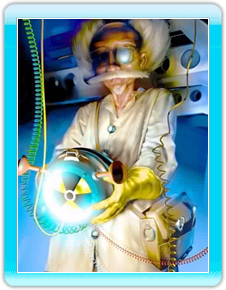

7 |
The Characters |
 |
|
MDK™2 allows you to take control of three completely different characters during the course of the game. Each character has a number of unique characteristics and abilities that set him apart from his comrades.

Kurt Hectic, the lead character from the original MDK™, is a reluctant hero, cursed by circumstance. Once a simple janitor for Doctor Fluke Hawkins, Kurt was chosen to wear the famed 'Coil Suit' to defend the Earth against the invasion of the evil Streamriding Aliens. The 'Coil Suit' was designed by Doctor Fluke Hawkins both as a powerful weapon and an alternative to classy evening wear. The 'Coil Suit' gives Kurt a number of special abilities including: a Sniper Scope that he can use to shoot enemies a mile away, a Ribbon Chute that can silently carry Kurt a great distance while floating through the air, and a devastating Chain Gun. Kurt reluctantly uses these tools to defend the Earth.

Max is the robotic creation of Doctor Fluke Hawkins. His unusual design (2 legs and 4 arms) allows him to hold up to four weapons simultaneously. Originally quite tame, Max downloaded an action hero personality in order to better help in the defense of the Earth against the Streamriding Aliens.

Doctor Fluke Hawkins is the famed irascible genius responsible both for the creation of Max and the development of “the Coil Suit.” As a player character, Doctor Hawkins is most unusual in that his physical weakness is more than made up for by his ingenuity. |
 |
 |
 |